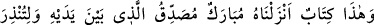
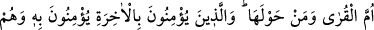
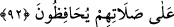

inkâr edip “Allah, insana hiç bir şey” kitap, vahiy “indirmedi” dediler. Bunu,
Kur’an’ın indirilmesini inkârda ileri gittikleri için söylüyorlardı. Çünkü, az önce
belirtildiği üzere bunu söyleyenler, ehl-i kitaptandı.
Onları azarlayarak ve onlara taş atarak “de ki: “Öyleyse Mûsâ’nın insanlara nûr ve
yol gösterici olarak getirdiği kitâbı” kendisi apaçık bir nur olan ve başkalarını da
aydınlatıp nurlandıran Tevrât’ı “kim indirdi?”
“Siz, onu parça parça kâğıtlar haline getirip” ayrı ayrı sayfalara ayırıp istediğinizi
ve hoşunuza gidenleri “gösteriyorsunuz.” Açıklamak istediğiniz bölümleri ortaya
koyuyorsunuz. “Çoğunu da gizliyorsunuz.” Meselâ Hz. Muhammed (a.s.)’ın sıfatlarını
bildiren âyetleri, recm âyetlerini ve bunlardan başka gizlemek istediğiniz Tevrat’ın
hükümlerini saklıyorsunuz.
Ey yahûdiler, “sizin de babalarınızın da bilmediği şeyler” Muhammed (a.s.)’ın
lisanıyle “size öğretilmiştir.” Bunlardan maksat, Kitab’dan aldıkları bilgiler ve
hükümlerdir.
Yahûdîlerin, bazı yerlerini gizlemek ve bir kısmını da açıklamak üzere, bir ilâhî kitabı
parçalara ayırmaları çok çirkindir, başlı başına bir kötülüktür. Bu kitabın onların ilim
ve mârifetlerinin kaynağı olduğu göz önüne alındığında yaptıklarının ne kadar çirkin ve
korkunç olduğu daha iyi anlaşılır.
“Allah” de!” yani “Kitab’ı Allah indirdi.” de. Onların şaşırıp kaldıklarına, asla
konuşmaya mecalleri kalmadığına dikkat çekmek için soruya verilecek cevap belli
olduğuna ve başka türlü cevaplandırmak da mümkün olmadığına işaret etmek için Hz.
Peygamber (a.s.)’a cevap vermesi emredilmiştir.
“Sonra bırak onları,” bulundukları çirkefin içinde terket, “daldıkları bataklıkta
oynayadursunlar.” Bırak, daldıkları bâtılda eğleşsinler. Hakikati tebliğ ettikten ve
delilleriyle doğru yolu gösterdikten sonra sana bir şey gerekmez.
Faydasız işlerle meşgul olan kimseye “Sen oyun oynuyorsun” denir.
92. Bu (Kur’an), Ümmü’l-kurâ (Mekke) ve çevresindekileri uyarman için sana
indirdiğimiz ve kendinden öncekileri doğrulayıcı mübarek bir kitaptır. Âhirete
inananlar buna da inanırlar ve onlar namazlarını hakkıyla kılmaya devam ederler.
“Bu” Kur’an “kentlerin anası” Mekke’yi “ve çevresindekileri” doğu ve batı
ahâlisini “uyarman için sana indirdiğimiz” Cenab-ı Hak Kur’ân’ı Cebrail’in diliyle,
vahy sûretiyle indirmeyi bizzat üstlendiğini bildirmek için böyle vasfediyor. Kur’an
lâfızlarının böyle fesâhat üzere oluşu, Hz. Peygamberden değildir. “ve kendinden